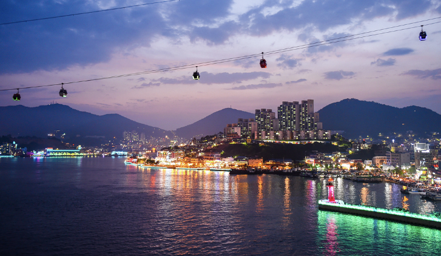

1. 여수에 대해서 알아보자
전라남도의 시. 밤바다가 유명하고 전라도 남쪽 끝에 위치한 여수는 전라남도 인구수 2위이고 전라남도 수출액 70%를 자랑하는 도시다. 여수는 원래 별 볼일 없는 시골에 불과했지만 2010년도 여수엑스포 이후로 급격히 도시화를 갖추었다. 근대화를 겪으면서 가슴아픈 사건도 있었지만 이제는 어엿한 전라남도의 대표 도시로 자리잡았다. 지금부터 관광수익이 300억에 달하는 최고의 관광도시 여수의 정보를 소개하겠다.
2. 여수 여행 계획
여수는 전라남도 중에서도 끝자락에 있어서 서울에서 꽤 멀리 가야한다. 자가용으로 고속도로를 3개나 타야한다.. 기차도 2번이나 환승해야 해서 당일치기로는 여수의 매력을 온전히 느끼기 어렵다. 섬이 많아서 첫날에는 섬 투어를 하고 밤에는 유명한 바다를 봐주고 다음날에 도시를 구경하는 코스가 잘 알려져 있다.
3. 여수에 가면 이곳은 들러주세요
1. 돌산공원
여수의 아름다운 바다와 시가지를 한눈에 보고 싶다면 돌산공원을 방문하면 좋다. 돌산공원은 여수 앞바다 돌산섬 초입에 조성된 공원으로 여수에서 꼭 둘러봐야 할 곳이다. 특히 밤에는 여수와 돌산도를 연결해주는 돌산대교와 여수항의 화려한 야경을 감상할 수 있다. 바다 건너 맞은편 자산공원까지 바다 위를 연결하는 해상 케이블카도 유명하다. 약 15분간 바다 위를 가로지르며 아름다운 바다와 여수시가, 장군도, 거북선대교, 하멜 등대 등을 감상할 수 있다.
2. 오동도
여수 여행의 일번지라 할 수 있는 곳으로 동백꽃으로 유명하다. 중심가에서 차로 10분 거리에 있어 부담 없이 다녀오기 좋다. 입구에서 섬까지는 방파제 길을 걷거나 동백열차를 타고 들어간다. 섬에는 동백나무, 시누대 등 상록수가 울창한 숲을 이루고 있다. 동백꽃은 10월에 시작해 4월에 만개하는데 동백꽃 핀 오동도의 절경은 유명하다. 순환 산책로가 잘 조성되어 있어 바다를 보며 산책하기 좋다.
3. 여수낭만포차거리
이제 도심에서 여수를 느낄 차례다 !. 노을이 여수를 아릅답게 품을 때, 이 거리는 더 아름답게 변한다. 여수 밤바다를 보며 포차에 앉아 유명한 돌문어삼합을 먹는다. 환한 거리, 북적이는 사람들, 삽합 냄새, 파도소리.. 그때만큼은 여수와 하나가 되어있을 것이다.
4. 여수를 대표하는 먹거리 !
1. 갓김치
여수의 돌산도 지역은 갓을 키우는데 토질과 기후가 알맞은 곳이라고 한다. 다른 지역의 갓보다 품질이 월등하고 부드럽고 단맛이 돈다는 특징을 가지고 있다. 또 갓이 톡 쏘는 맛이 강하여 호불호가 많이 갈리는 음식인데 돌산 갓은 쏘는 맛이 덜해 남녀노소 먹기 좋다. 그냥 먹어도 맛있지만 앞으로 나올 음식들과 곁들여서 먹어도 좋다.
2. 간장게장
한국인들이 좋아하는 반찬 1,2위를 다투는 간장게장이다. 특히 여수는 간장게장의 성지라고 불리는 곳인데, 너무 달고 짜지도 않으면서 게장 특유의 감칠맛이 절로 밥을 부르는 맛이라고 한다. 또 바로 잡은 신선한 게와 고춧가루와 간장 등의 부재료도 여수에서 바로 생산하기 때문에 그 퀄리티는 보장된 셈이다. 점심에는 흰 백반에 간장게장 어떤가 ?
3. 갯장어

여수 갯장어는 수입산이라고 믿을만큼 살이 꽉 차고 몸통이 굵다고 한다. 품질이 좋은 장어에 걸맞은 요리들이 정말 많은데, 그 싱싱함을 자랑하는 갯장어회, 뜨뜻하게 속을 달래줄 장어탕, 원기회복과 맛까지 동시에 챙긴 장어구이 등 취향에 맞는 요리를 먹으면 된다.